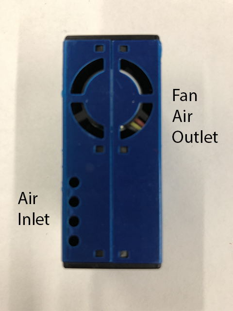
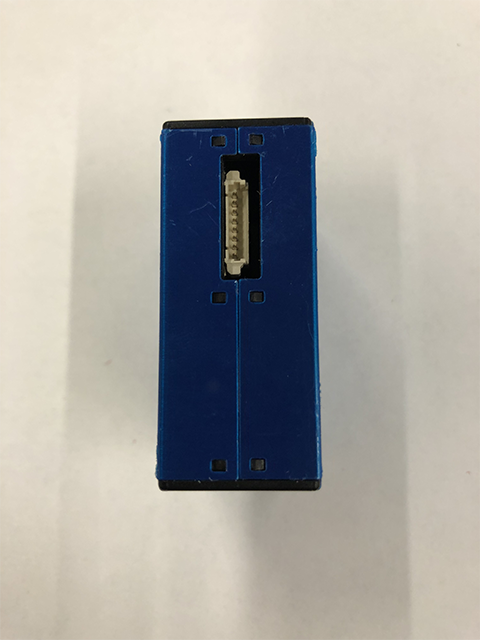
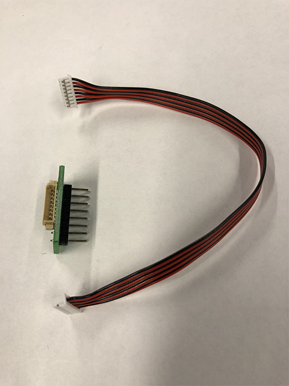
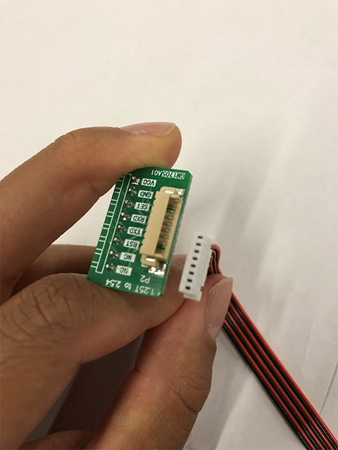
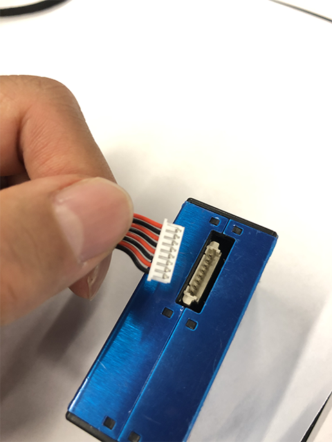
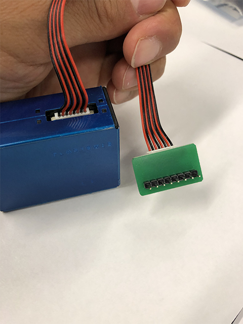
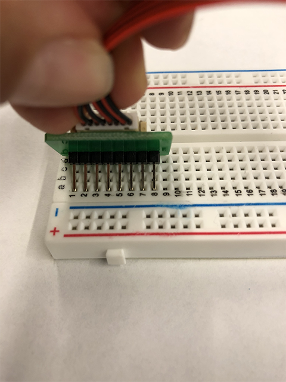
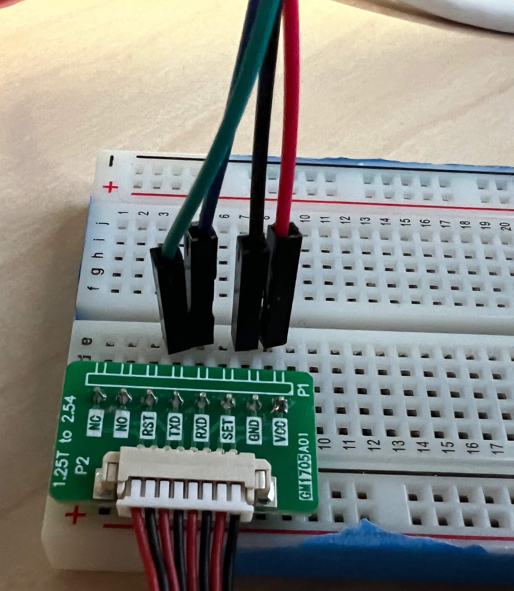
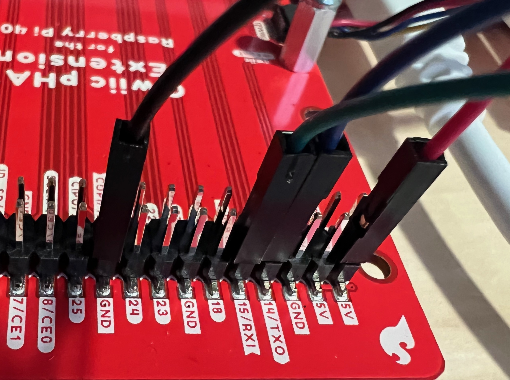

Particulate matter sensing to assess indoor air quality
Contents
Particulate matter sensing to assess indoor air quality#
Introduction#
In this lesson you will learn how to set up your PMS5003 particular matter, or PM, sensor with the hardware provided. You will learn how to connect it to your Raspberry Pi 400 and the basics of how to get the sensor readings from it using Python 3. If you are interested in learning more about particulate matter sensing see this page.
Parts list#
For this exercise you’ll need:
Raspberry Pi 400 computer
Sparkfun Qwiic pHAT Extension
PMS5003 particular matter sensor
Assembly#
1. Assemble the sensor#
The PM sensor has two openings on one side, the air inlet and fan air outlet.

The PM sensor has a cable connection on the other side. If there is not a cable already connected, follow the 1a. Connecting the PM sensor cable instructions. Otherwise, skip that section.

1a. Connecting the PM sensor cable#
A small green board with 8 pins will connect to the breadboard via a cable connection.

Take the female end (white) of the cable and insert it into the green board connector.

Take the other female end (white) of the cable and insert it into the PM Sensor.

1b. Assembled sensor#
You should now have a pm sensor with the cable attached as shown. On the other end of the cable there should be a green board with 8 pins.

2. Connect the sensor to the breadboard#
Insert the 8 pins from the small green board along a column on the breadboard as shown below.

Collect 4 male-to-female jumper wires. On the small green board, identify the labels TXD, RXD, GND, and VCC.
Insert the male ends of the into the the following breadboard on the same rows of the breadboard.

3. Connect the breadboard to the pHAT#
Connect the female end of the GND wire to GND on the pHAT. Connect the female end of the VCC wire to 5V on the pHAT. Connect the female end of the TXD wire to 15/RXI on the pHAT. Connect the female end of the RXD wire to 14/TXO on the pHAT.

4. Should be done#
You should now have a complete product that looks like the following with the pm sensor wired to the breadboard and the breadboard wired to the pHAT.

Python 3 code#
To use the following code, open a command terminal. Then enter the following command:
source ~/code/4cscc-ln/venv/bin/activate
If this works you should see (venv) on the far left of the text in
your terminal.
Then, enter the following command to start an ipython terminal:
ipython
Finally, copy paste the following code into the ipython terminal. This will collect data from your PM sensor every 1 second and display the data on the screen. It will run until you press “Control-c” (i.e., press the “control” and “c” keys at the same time).
# Import the library we use to access the sensor
from pms5003 import PMS5003
# We are going to wait between sensor readings so we don't spam too many
from time import sleep
# Create an object representing our sensor
pms5003 = PMS5003()
# Repeat this as long as the program is running
while True:
# Read the data from the sensor
pms_reading = pms5003.read()
# Access and print three specific pieces of data returned by the PM sensor
print("PM 1.0: %d" % pms_reading.pm_ug_per_m3(1.0))
print("PM 2.5: %d" % pms_reading.pm_ug_per_m3(2.5))
print("PM 10.0: %d" % pms_reading.pm_ug_per_m3(10))
print("")
# Wait for one second before attempting to read from the sensor again
sleep(1)
This code was adapted from the files found here. This repo contains the source for the pms5003 module we use to read from the sensor.